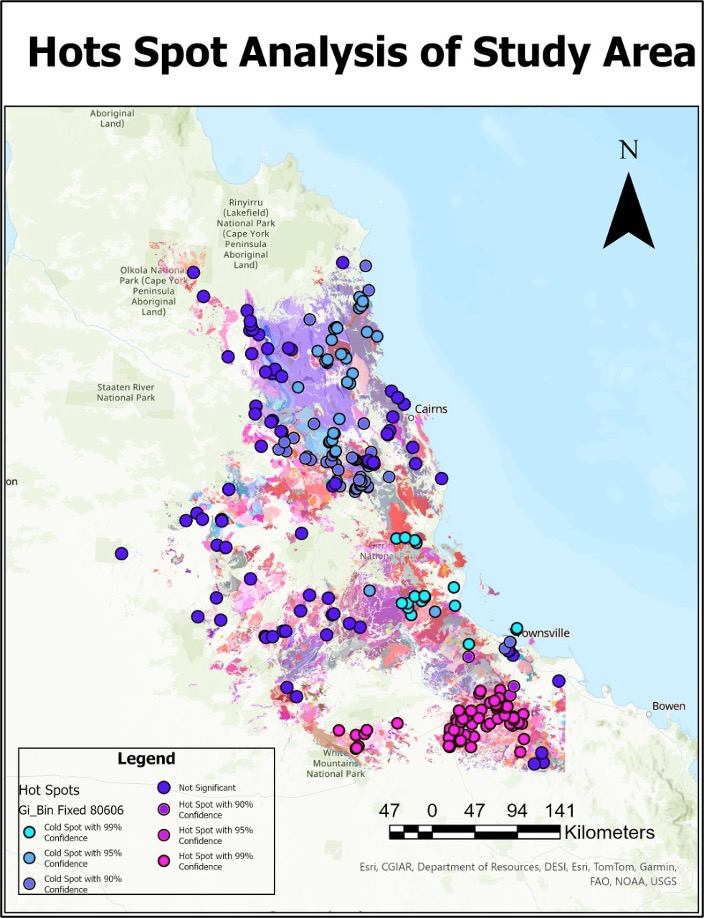
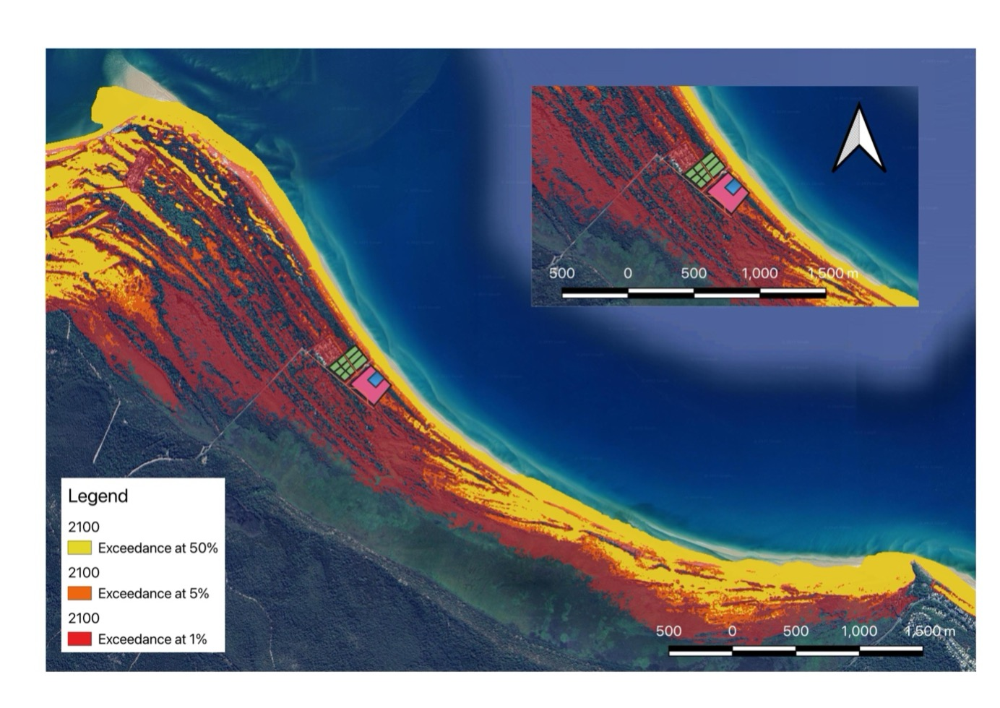
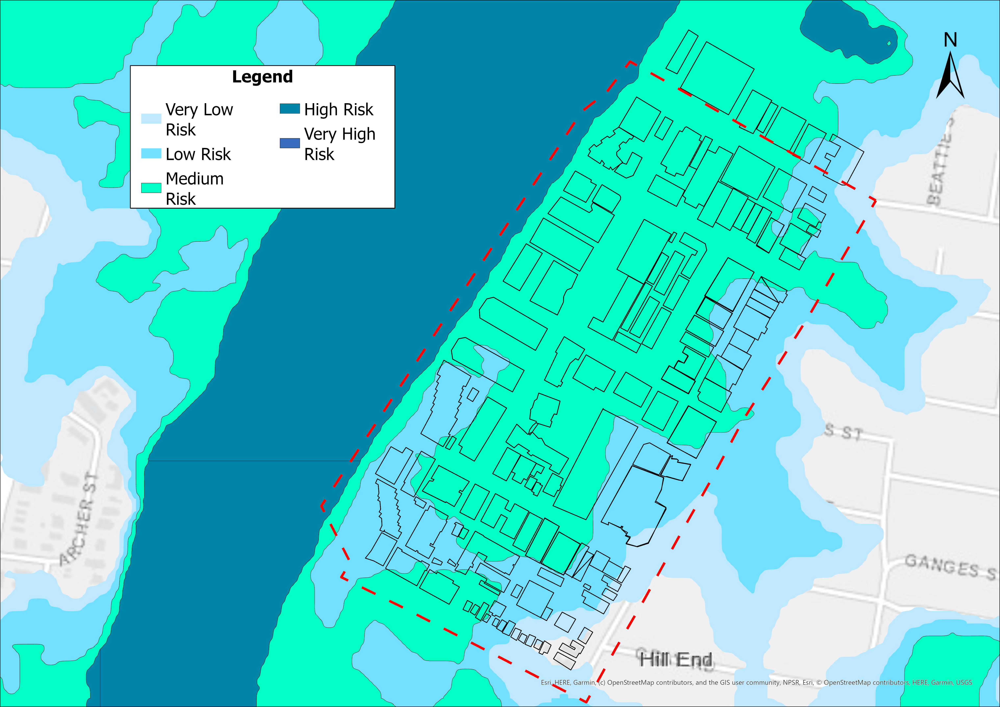
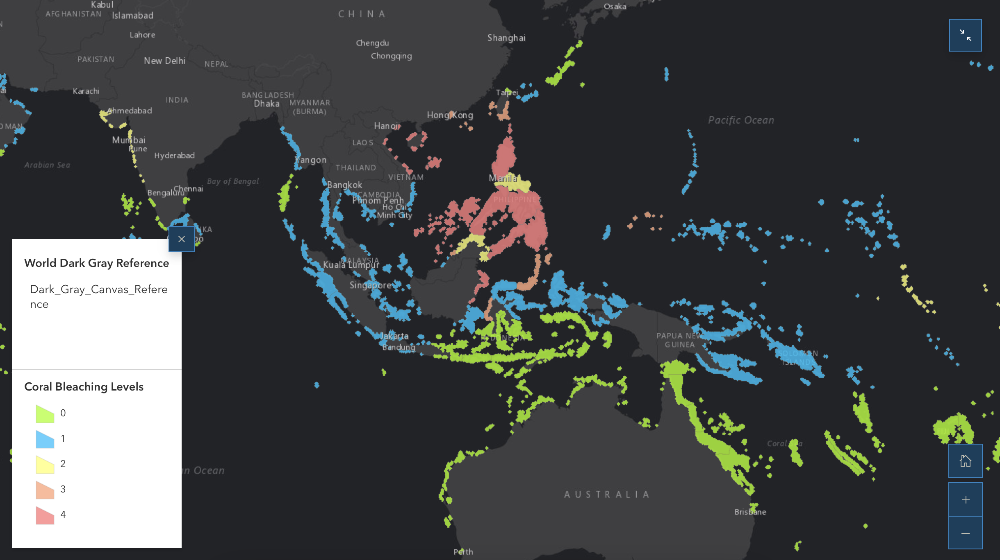

GIS Portfolio
Spatial Data Analyst · GIS Graduate · GIS Consultant
I turn complex geographic data into clear spatial insights - from environmental analysis and urban planning to interactive dashboards and field surveys.
About me
I came to GIS through a love of geography — how place shapes everything — and stayed for the precision of spatial analysis. My path from a Bachelor of Arts in Geography at the University of Delhi to a Master of GIS at the University of Queensland was a deliberate move toward the technical side of understanding the world: not just where things are, but why they are, and what happens next.
At UQ I worked with real geological survey datasets spanning tens of thousands of records, ran probabilistic coastal modelling using Monte Carlo simulations, and built reproducible analytical workflows in Python. I'm comfortable at every stage of the GIS pipeline — from raw data QA and spatial database management, through analysis and cartographic design, to communicating findings to non-technical audiences.
I bring rigour to every dataset and genuine curiosity to every problem. Based in Brisbane, I hold full Australian work rights on a 485 visa and am open to relocation for the right opportunity.
Tools & skills
Desktop GIS
Web & Cloud
Programming
Field & Design
Selected work

[ add images/project1.jpg ]10,000+ records. 8 maps. One clear picture of Queensland's geological story. Processed and standardised large-scale geological survey data to map rock formation distribution and age patterns across Queensland, identifying spatial data gaps and guiding future survey sampling recommendations.

[ add images/project2.jpg ]Sea levels are rising — I modelled exactly what that means for Flinders Beach in numbers a council can act on. Integrated wave climate data, beach profile surveys, and probabilistic modelling to project shoreline change across multiple future risk scenarios with full uncertainty quantification.

[ add images/project3.jpg ]Not all risk is visible until you map it. This flood risk analysis of West End classified infrastructure exposure across five risk tiers — from very low to very high — to directly inform future urban development decisions in one of Brisbane's most densely built riverside suburbs.

[ add images/project4.jpg ]Coral reefs don't die quietly — the data shows exactly where. This ArcGIS Online web map visualises coral bleaching severity levels (0–4) across reefs in and around the Philippines and Southeast Asia, revealing the geographic pattern of thermal stress on one of the world's most biodiverse marine ecosystems.
Get in touch
I'm actively seeking graduate GIS, spatial analyst, and GIS consultant roles across Australia. Full work rights on a 485 visa, based in Brisbane and open to relocation. If you're working on something interesting, I'd love to hear from you.